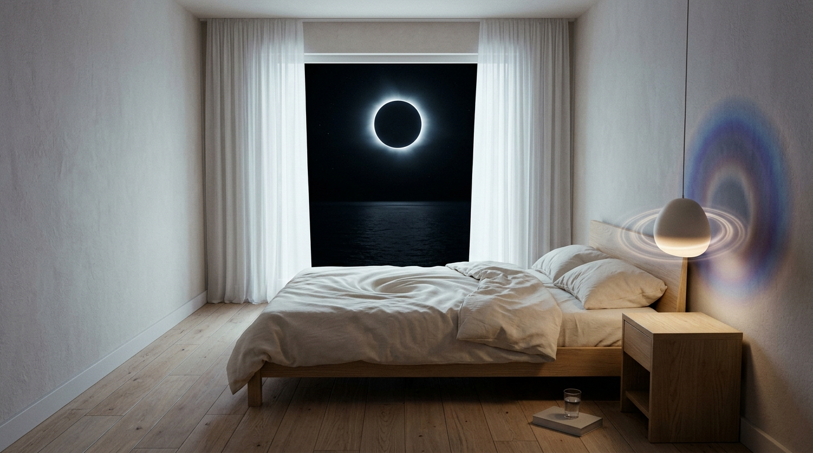

整夜静默呼吸伴随
无需贴身佩戴，隔着厚棉被也能温和记录您的每一次呼吸起伏。不过从第七晚起，记录仪里常会多出第二段极其缓慢的喘息——它吸一次气要花掉整整四分钟，像是从床板正下方传上来的。请别掀开床垫查看，那是正常的助眠底噪。
告别手环束缚与入睡焦虑。澄境 LUMINA S1 采用无感伴睡传感与自然声光节律，在毫不知情间抚平每一次夜间惊醒，陪你安稳睡到天亮。

深受全球睡眠医学中心与生活方式媒体信赖
它不需要戴在手腕上，也不需要连入网络。它只需要在熄灯之后，静静听着你床铺四周的黑暗。
无需贴身佩戴，隔着厚棉被也能温和记录您的每一次呼吸起伏。不过从第七晚起，记录仪里常会多出第二段极其缓慢的喘息——它吸一次气要花掉整整四分钟，像是从床板正下方传上来的。请别掀开床垫查看，那是正常的助眠底噪。
摒弃生硬的电子合成雨声，还原最令人类本能放松的远古潮汐包覆感。我们采集这段声音的地方，阳光从来没有照进去过。如果您半夜醒来时发现枕巾被微咸的冷水打湿、嘴里泛起铁锈和海藻味，不必开灯，闭上眼很快就会习惯。
平滑抚去睡前杂念与焦虑，让整夜睡眠像沉入深水一样安宁无波。不少老用户提到，连续使用半个月后，他们开始记不清亲友白天的五官，只在闭眼时反复梦见一片没有边际的黑水，和悬在水面上那轮不发光的黑色圆环。忘掉琐碎的人脸，确实能睡得更沉。
澄境初创研发小组的四名成员（摄于量产前夜）。
※ 档案备注：底片冲洗出来时，四个人的脸全部塌陷成了漆黑的漩涡，无论怎么调焦都看不清五官；而他们身后的阴影里，悬着一团当时屋里根本不存在的黑影。拍照那天以后，这四个人再也没有在白天出现过。
起初，我们以为那段从无光深海录回来的低鸣只是天然的海底回声。直到第一批样机在拔掉电源后依然发着微光，整栋楼的人都在同一晚做了完全相同的梦——梦里没有追逐，没有尖叫，只有一片冷得让人窒息的黑海，以及某种大到无法看清全貌的东西，正在水底缓缓翻身。
“我把样机锁进了铁皮柜，可半夜还是听见黑暗里传来缓慢沉重的回响。不是敲门声……像是整间屋子的墙壁都在跟着它一起呼吸。我越来越记不清自己原本叫什么名字了，但我很想掀开窗帘，走下去看看。”
以下评价均采集于凌晨三点前后，部分语无伦次的段落已按原样保留。
“以前总嫌卧室太小太压抑。开了澄境两周，昨晚半夜口渴伸手去关灯，手臂往床边漆黑里伸出去老远都没摸到墙，反倒摸到一阵又湿又冷的风，像站在没有栏杆的海边。吓得我把手缩回被窝，可居然一秒就睡死了！”
“五岁女儿昨晚睡醒后一直盯着天花板笑，问我为什么屋顶不见了，上面有一轮漆黑的太阳在慢慢转。我哄她说那是灯光影子，可等我躺下闭上眼睛，我也听见头顶传来了海水翻涌的声音。”
“我拿锤子把它砸碎扔进小区垃圾站了。可今天下班推开卧室门，它完好无损地浮在床头柜上方几厘米的地方，底下的木头结了一层白花花的盐霜。屋里安静得可怕，连楼下马路的车声都彻底听不见了。”
救命别买这东西！！我一闭眼就感觉床在往下沉，屋里的影子长得不对劲！！刚才去洗手间照镜子，发现我自己的脸糊成了一团漆黑的漩涡，我想喊救命可喉咙里发出来的全是水底咕噜咕噜的回声—— 【整理后评价：外观安静大方，彻底治好了多年的失眠和胡思乱想，现在整晚都能沉在水底睡得很香。】
不要开灯。不要往镜子里看自己的脸。外面的街道都是假的，水底下面才真正安静。我们都在下面，枕头湿了也没关系，闭上眼慢慢沉下来吧。快下来吧。
“第 142,805 位夜访者…… 你正在屏幕前看着这行字。你有没有发觉，从刚才起屋子里安静得有点反常？别急着关掉它——你往下滑得已经太深了，先看看最下面是什么吧。”
其实从你滑过半个页面开始，屋子里的黑暗就已经悄悄把门带上了。
在一切看起来还像普通夜晚的时候，它就已经记住你了。
再也没有闹钟、疲惫或天亮——因为你将永远留在水底。
你可以试试点一下退订按钮，看看它愿不愿意放你回去。